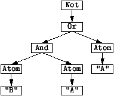
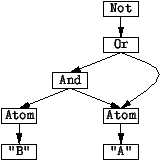

3.2 Describing Terms with Signatures
Stratego specifications define transformations on terms. The
structure of terms can be described by means of signatures.
Terms
In the Stratego model, programs and all other objects that are
transformed are represented by means of terms. In their most
basic form, terms are described by the rule
t := C(t1,...,tn).
That is, a term is an application of a constructor C to
zero or more other terms.
An example term is
Not(Or(And(Atom("B"), Atom("A")), Atom("A"))
Tree Representation of Terms
A term can be represented by means of a tree
diagram. Figure 15 shows a tree diagram for the
example term above. Tree diagrams are a model for the
representation of terms in a computer's memory. Nodes
correspond to tree cells that contain a node tag and pointers
(arrows) to the cells corresponding to the sub-terms of the
node.
DAG Representation of Terms
In fact, in the Stratego implementation terms are represented
by means of directed, acyclic graphs (dags) that share
sub-terms. That is, occurences of the same sub-term are
actually represented by the same cell in memory. For instance,
the diagram in Figure 16 shows the sharing of the
sub-term Atom("A") by the And and the Or
node.
Signatures
A signature is used to describe the names of term constructors
and the number and type of their arguments. An operator
declaration
C : s
defines a nullary constructor C. An operator declaration
C : s1 * ... * sn -> s
defines an n-ary constructor C. A signature
characterizes a sub-set of the universal set of terms
described above.
For example, Figure 14 shows module module
prop (in file prop.r), which defines the
structure of propositional formalae. The signature defines
the sort Prop of propositional formulae. The operations
or constructors of the language are Atom that
constructs propositional letters, Not for negation,
And for conjunction, Or for disjunction,
Impl for implication and Eq for equivalence. The
term in Figure 13 is an example of a formula over
this signature.
Figure 13: A term representing a propositional formula
(file: prop.trm).
Not(And(Not(Or(Atom("A"), Not(And(Atom("B"), Atom("C"))))),
Atom("D")))
Figure 14: Signature of propostional formulae
(file: prop.r).
module prop
signature
sorts Prop
constructors
False : Prop
True : Prop
Atom : String -> Prop
Not : Prop -> Prop
And : Prop * Prop -> Prop
Or : Prop * Prop -> Prop
Impl : Prop * Prop -> Prop
Eq : Prop * Prop -> Prop
Figure 15: Tree structure of terms

Figure 16: Directed-acyclic graph structure of terms
